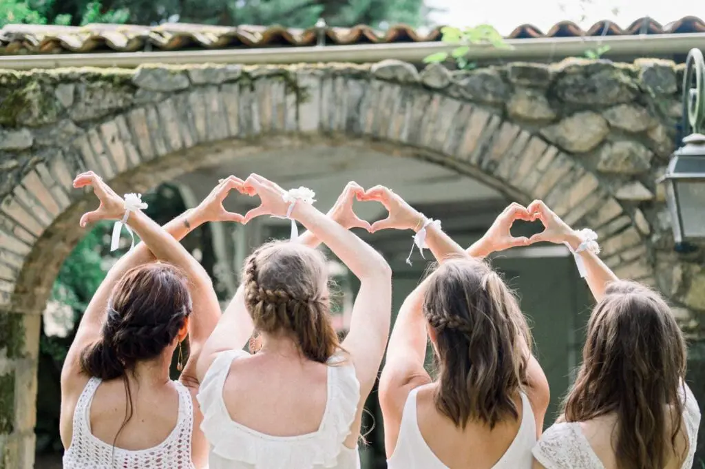
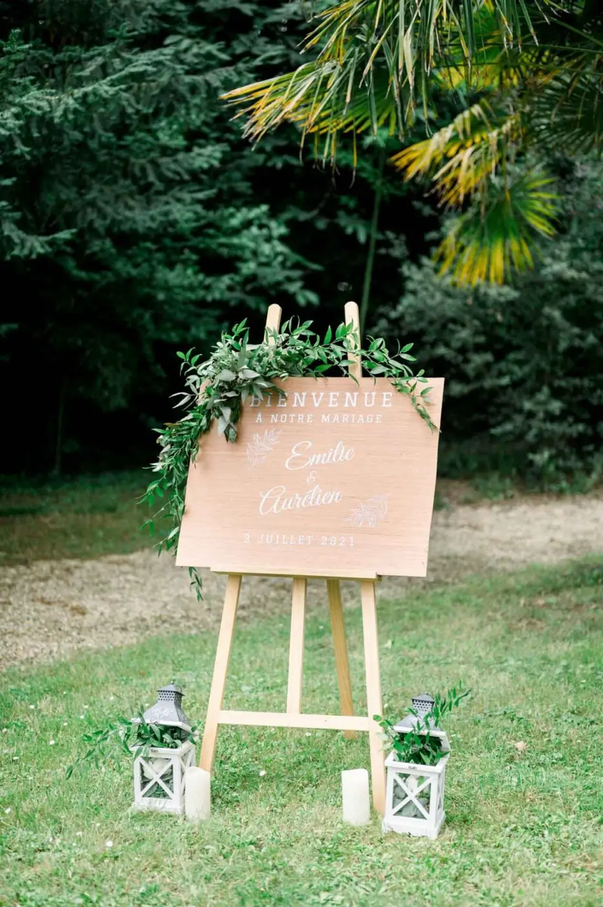
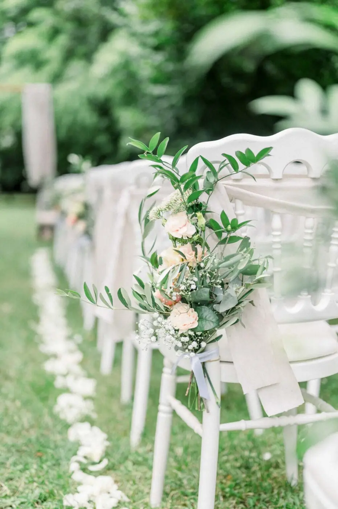

Country chic
A simple, authentic wedding
With the bride, I worked on the essentials of a bespoke, chic romantic design: red, white, candles, feathers and flowers… all the spirit she wanted to convey.
Alongside all these elements, lighting is particularly important in a romantic set design. The idea is to create an intimate, personal feel. To achieve this, I favoured candles and soft lighting in general.
Drapes are also key elements: their suppleness and lightness give your reception room a poetic feel.


Set design
As a high-end wedding planner and above all a wedding designer in the Bordeaux region, I can meet your expectations by creating a wedding world unlike any other... yours! If you feel you need help, send me an email!
Romance
Don't hesitate to play with sheer fabrics, which also add a touch of luxury and originality!
